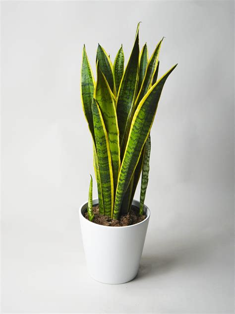
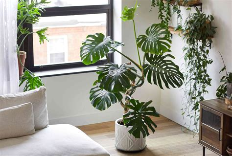
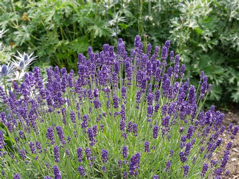
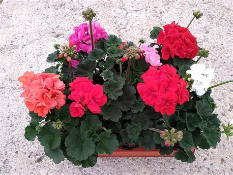
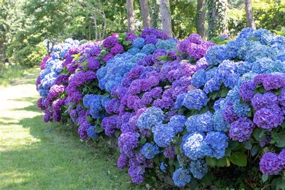

Plantas de interior
-

Potus
Epipremnum aureum
Tolera poca luz y riegos espaciados: ideal para empezar en interiores.
Descargar ficha en PDF de potus -

Lengua de suegra
Dracaena trifasciata
Resiste la sombra y el riego espaciado: perfecta para ambientes internos secos.
Descargar ficha en PDF de lengua de suegra -

Monstera
Monstera deliciosa
Necesita luz indirecta abundante y un tutor donde trepar a medida que crece.
Descargar ficha en PDF de monstera
Plantas de exterior
-

Lavanda
Lavandula angustifolia
Prefiere sol pleno y suelo bien drenado: florece mejor cuanto menos se la riega.
Descargar ficha en PDF de lavanda -

Geranio
Pelargonium hortorum
Florece casi todo el año a pleno sol si se le quitan las flores marchitas.
Descargar ficha en PDF de geranio -

Hortensia
Hydrangea macrophylla
Prefiere sombra parcial y riego frecuente: el color de sus flores cambia según el suelo.
Descargar ficha en PDF de hortensia